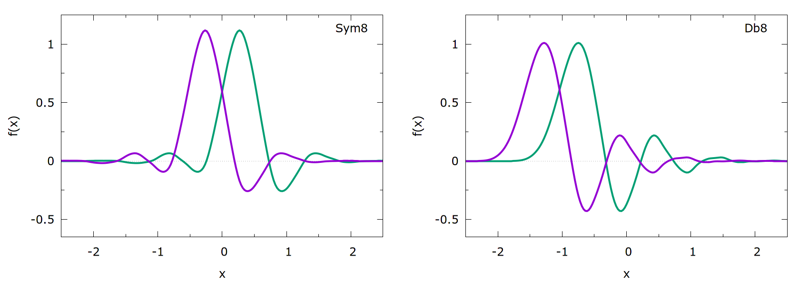

Action: BF_WAVELETS
| Module | ves |
|---|---|
| Description | Usage |
| Daubechies Wavelets basis functions. |
Details and examples
Daubechies Wavelets basis functions.
Note: at the moment only bases with a single level of scaling functions are usable, as multiscale optimization is not yet implemented.
This basis set uses the Daubechies Wavelets that are discussed in the first article cited below to construct a complete and orthogonal basis. See the second paper cited below for full details.
The basis set is based on using a pair of functions, the scaling function (or father wavelet) and the wavelet function (or mother wavelet) . They are defined via the two-scale relations for scale and shift :
The exact properties are set by choosing filter coefficients, e.g. choosing for the father wavelet:
The filter coefficients by Daubechies result in an orthonormal basis of all integer shifted functions:
Because no analytic formula for these wavelets exist, they are instead constructed iteratively on a grid. The method of construction is close to the "Vector cascade algorithm" described in this book. The needed filter coefficients of the scaling function are hardcoded, and were previously generated via a python script. Currently the "maximum phase" type (Db) and the "least asymmetric" (Sym) type are implemented. We recommend to use Symlets.
As an example two adjacent basis functions of both Sym8 (ORDER=8, TYPE=SYMLET) and Db8 (ORDER=8, TYPE=DAUBECHIES) is shown in the figure. The full basis consists of shifted wavelets in the full specified interval.

Specify the wavelet type
The TYPE keyword sets the type of Wavelet, at the moment "DAUBECHIES" and "SYMLETS" are available. The specified ORDER of the basis corresponds to the number of vanishing moments of the wavelet, i.e. if TYPE was specified as "DAUBECHIES" an order of 8 results in Db8 wavelets.
Specify the number of functions
The resulting basis set consists of integer shifts of the wavelet with some scaling ,
with the variational parameters . Additionally a constant basis function is included.
There are two different ways to specify the number of used basis functions implemented. You can either specify the scale or alternatively a fixed number of basis function.
Coming from the multiresolution aspect of wavelets, you can set the scale of the father wavelets, i.e. the largest scale used for approximation. This can be done with the FUNCTION_LENGTH keyword. It should be given in the same units as the used CV and specifies the length (of the domain interval) of the individual father wavelet functions.
Alternatively a fixed number of basis functions for the bias expansion can be specified with the NUM_BF keyword, which will set the scale automatically to match the desired number of functions. Note that this also includes the constant function.
If you do not specify anything, it is assumed that the range of the bias should match the scale of the wavelet functions. More precise, the basis functions are scaled to match the specified size of the CV space (MINIMUM and MAXIMUM keywords). This has so far been a good initial choice.
If the wavelets are scaled to match the CV range exactly there would be basis functions whose domain is at least partially in this region. This number is adjusted if FUNCTION_LENGTH or NUM_BF is specified. Additionally, some of the shifted basis functions will not have significant contributions because of their function values being close to zero over the full range of the bias. These 'tail wavelets' can be omitted by using the TAILS_THRESHOLD keyword. This omits all shifted functions that have only function values smaller than a fraction of their maximum value inside the bias range. Using a value of e.g. 0.01 will already reduce the number of basis functions significantly. The default setting will not omit any tail wavelets (i.e. TAILS_THRESHOLD=0).
The number of basis functions is then not easily determinable a priori but will be given in the logfile. Additionally the starting point (leftmost defined point) of the individual basis functions is printed.
With the PERIODIC keyword the basis set can also be used to bias periodic CVs. Then the shift between the functions will be chosen such that the function at the left border and right border coincide. If the FUNCTION_LENGTH keyword is used together with PERIODIC, a smaller length might be chosen to satisfy this requirement.
Grid
The values of the wavelet function are generated on a grid. Using the cascade algorithm results in doubling the grid values for each iteration. This means that the grid size will always be a power of two multiplied by the number of coefficients () for the specified wavelet. Using the MIN_GRID_SIZE keyword a lower bound for the number of grid points can be specified. By default at least 1,000 grid points are used. Function values in between grid points are calculated by linear interpolation.
Optimization notes
To avoid 'blind' optimization of the basis functions outside the currently sampled area, it is often beneficial to use the OPTIMIZATION_THRESHOLD keyword of the VES_LINEAR_EXPANSION (set it to a small value, e.g. 1e-6)
Examples
First a very simple example that relies on the default values. We want to bias some CV in the range of 0 to 4. The wavelets will therefore be scaled to match that range. Using Db8 wavelets this results in 30 basis functions (including the constant one), with their starting points given by .
BF_WAVELETSDaubechies Wavelets basis functions. More details ... ORDERThe order of the basis function expansion=8 TYPESpecify the wavelet type=DAUBECHIES MINIMUMThe minimum of the interval on which the basis functions are defined=0.0 MAXIMUMThe maximum of the interval on which the basis functions are defined=4.0 LABELa label for the action so that its output can be referenced in the input to other actions=bf ... BF_WAVELETS
By omitting wavelets with only insignificant parts, we can reduce the number of basis functions. Using a threshold of 0.01 will in this example remove the 8 leftmost shifts, which we can check in the logfile.
BF_WAVELETSDaubechies Wavelets basis functions. More details ... ORDERThe order of the basis function expansion=8 TYPESpecify the wavelet type=DAUBECHIES MINIMUMThe minimum of the interval on which the basis functions are defined=0.0 MAXIMUMThe maximum of the interval on which the basis functions are defined=4.0 TAILS_THRESHOLDThe threshold for cutting off tail wavelets as a fraction of the maximum value=0.01 LABELa label for the action so that its output can be referenced in the input to other actions=bf ... BF_WAVELETS
The length of the individual basis functions can also be adjusted to fit the specific problem. If for example the wavelets are instead scaled to length 3, there will be 35 basis functions, with leftmost points at .
BF_WAVELETSDaubechies Wavelets basis functions. More details ... ORDERThe order of the basis function expansion=8 TYPESpecify the wavelet type=DAUBECHIES MINIMUMThe minimum of the interval on which the basis functions are defined=0.0 MAXIMUMThe maximum of the interval on which the basis functions are defined=4.0 FUNCTION_LENGTHThe domain size of the individual basis functions=3 LABELa label for the action so that its output can be referenced in the input to other actions=bf ... BF_WAVELETS
Alternatively you can also specify the number of basis functions. Here we specify the usage of 40 Sym10 wavelet functions. We also used a custom minimum size for the grid and want it to be printed to a file with a specific numerical format.
BF_WAVELETSDaubechies Wavelets basis functions. More details ... ORDERThe order of the basis function expansion=10 TYPESpecify the wavelet type=SYMLETS MINIMUMThe minimum of the interval on which the basis functions are defined=0.0 MAXIMUMThe maximum of the interval on which the basis functions are defined=4.0 NUM_BFThe number of basis functions that should be used=40 MIN_GRID_SIZEThe minimal number of grid bins of the Wavelet function=500 DUMP_WAVELET_GRID If this flag is set the grid with the wavelet values will be written to a file WAVELET_FILE_FMTThe number format of the wavelet grid values and derivatives written to file=%11.4f LABELa label for the action so that its output can be referenced in the input to other actions=bf ... BF_WAVELETS
Full list of keywords
The following table describes the keywords and options that can be used with this action
| Keyword | Type | Default | Description |
|---|---|---|---|
| ORDER | compulsory | none | The order of the basis function expansion |
| MINIMUM | compulsory | none | The minimum of the interval on which the basis functions are defined |
| MAXIMUM | compulsory | none | The maximum of the interval on which the basis functions are defined |
| TYPE | compulsory | none | Specify the wavelet type |
| DEBUG_INFOThis keyword do not have examples | optional | false | Print out more detailed information about the basis set |
| FUNCTION_LENGTH | optional | not used | The domain size of the individual basis functions |
| NUM_BF | optional | not used | The number of basis functions that should be used |
| TAILS_THRESHOLD | optional | not used | The threshold for cutting off tail wavelets as a fraction of the maximum value |
| MOTHER_WAVELETThis keyword do not have examples | optional | false | If this flag is set mother wavelets will be used instead of the scaling function (father wavelet) |
| MIN_GRID_SIZE | optional | not used | The minimal number of grid bins of the Wavelet function |
| DUMP_WAVELET_GRID | optional | false | If this flag is set the grid with the wavelet values will be written to a file |
| WAVELET_FILE_FMT | optional | not used | The number format of the wavelet grid values and derivatives written to file |
| PERIODICThis keyword do not have examples | optional | false | Use periodic version of basis set |
References
More information about how this action can be used is available in the following articles:
- I. Daubechies, Ten Lectures on Wavelets (Society for Industrial and Applied Mathematics, 1992; http://dx.doi.org/10.1137/1.9781611970104)
- B. Pampel, O. Valsson, Improving the Efficiency of Variationally Enhanced Sampling with Wavelet-Based Bias Potentials. Journal of Chemical Theory and Computation 18, 4127–4141 (2022)